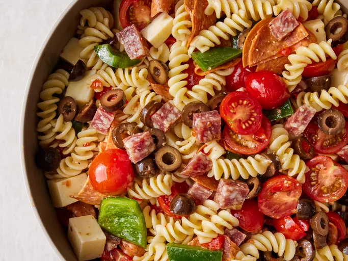

Awesome Pasta Salad

This pasta salad with pepperoni, tomatoes, and provolone cheese is the best I've ever eaten, and people request
it
frequently.
It's a very easy, light-tasting side dish for a picnic or dinner.
Ingredients
- 1 (16 ounce) package uncooked tri-color spiral pasta
- 1/2 pound sliced pepperoni sausage, cut into strips
- 1/2 pound provolone cheese, cubed
- 1/2 pound mozzarella cheese, cubed
- 1 large red onion, cut into thin strips
- 1 large green bell pepper, cut into thin strips
- 1 (6 ounce) can black olives, drained
- 2 large tomatoes, chopped
- 1 (8 ounce) bottle Italian salad dressing
- 1 tablespoon dried oregano
- 1/4 cup grated Parmesan cheese
Instructions
- Bring a large pot of lightly salted water to a boil. Add pasta, and cook for 8 to 10 minutes or until al
dente. Drain, and rinse with cold water.
- In a large bowl, combine pasta with pepperoni, provolone, mozzarella, red onion, green pepper, olives, and
tomatoes. Pour in salad dressing, sprinkle with oregano and Parmesan cheese, and toss to coat.
- Refrigerate for 2 hours, and serve cold.